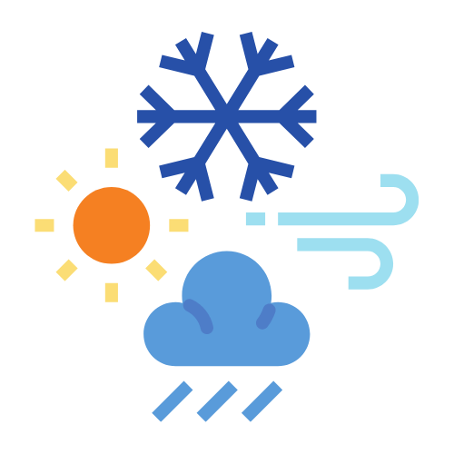

FAQ's
- This weather site uses an API from weather.gov for its forecasting.
- To display the temperature chart this site uses chartjs.org
- The login button shown on the homepage is not connected to login you into anything.
- Bootstrap is used for buttons, modals, and the nav sidebar.
- Contact Us on the contact page is not linked out to send an email to anyone.
- Under the current weather box on the homepage a graphic might not show up for all types of weather. I need to go through weather.gov to verify all of their shortForecast wording.
